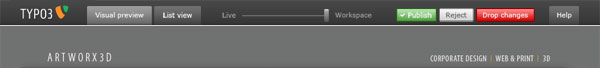
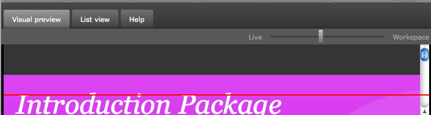
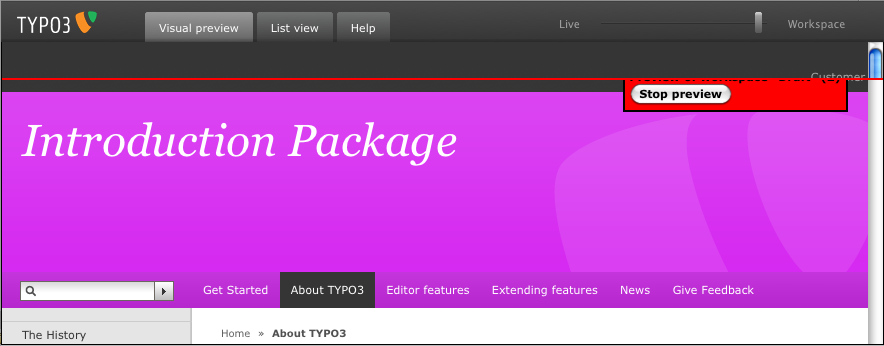

Feature #10642
Implement workspace preview
| Status: | Closed | Start date: | 2010-11-05 | ||
|---|---|---|---|---|---|
| Priority: | Must have | Due date: | |||
| Assigned To: | Lars Zimmermann | % Done: | 90% |
||
| Category: | Workspaces | Spent time: | 5.00 hours | ||
| Target version: | - | ||||
| PHP Version: | Sprint Focus: | ||||
| Complexity: |
Description
#9472 presents a new design for the workspace preview window. We need a CSS styling for it.

Purpose: This screen is shown, when you preview changes made in a workspace, which aren't "live", yet. It is shown as an iframe above your Frontend website.
- Please use the attached ws_preview.html file
- Create an ExtJS skin for it to adjust the styling
This doesn't require changes to the TYPO3 source itself, just reference the CSS file in ws_preview.html.
Presenting intermediate results is very welcome!
entwurf_4.5-workspaces_03-vergleichsscreens.psd (1.6 MB)
workspace-preview.jpg - Screenshot (23.5 kB)
{kind=link}
workspace-preview-thumb.jpg - Thumbnail (6.8 kB)
{kind=link}
ws_preview.html
 (2.8 kB)
(2.8 kB)
ws_preview_rev9480.html
(3 kB)
xtheme-t3skin.diff
- CSS Diff File
(49.9 kB)
workspace-styles-thumb.png - Screenshot (7.3 kB)
{kind=link}
f10642-skin.css
- New FE skin, containing rules which are not really needed
(49.9 kB)
f10642-skin.diff
- Changes made for the WS preview
(2.9 kB)
ws-comparison.png - Screenshot (32.6 kB)
{kind=link}
f10642-v2.diff
- Patch (against sysext/workspaces/
(4 kB)
f10642-v2.zip - Images (1 kB)
f10642-v3.diff
(4.5 kB)
f10642_v4.png - Screenshot (49.8 kB)
{kind=link}
f10642_v4.diff
- Diff
(10.9 kB)
f10642_v4.zip - Binaries (5 kB)
f10642_v5.diff
(11.9 kB)
Related issues
History
#1 Updated by Lars Zimmermann over 4 years ago
#2 Updated by Steffen Gebert over 4 years ago
- File workspace-preview.jpg added
#3 Updated by Steffen Gebert over 4 years ago
- File workspace-preview-thumb.jpg added
#4 Updated by Tolleiv Nietsch over 4 years ago
- File ws_preview.html added
ws_review.html is a first draft made by Steffen Kamper and me - demonstrates the slider functionality.
Problem at the moment is that the scrollbars within the preview-iFrames can't be harmonized because this might/will raise security warnings (due to XSS) ... feel free to contact me if you've any questions for this.
Just place the attached file in the root of any TYPO3 installation (which uses typo3-trunk) and you'll see the magic ;)
#5 Updated by Steffen Gebert over 4 years ago
- Priority changed from Should have to Must have
#6 Updated by Steffen Gebert over 4 years ago
- Assigned To set to Jose Padilla
#7 Updated by José Padilla over 4 years ago
Couple Notes about the progress on this task:
I'm currently working on thecontainer with class "x-toolbar-ct" I have a question about this:
- Currently I see the buttons: "live Maximum","Workspace Maximum" and the slider, In the PSD file attached I see the buttons Publish, Reject Drop, Changes and Help which I believe belong to the table with class "x-toolbar-right..." I can't see these 4 right buttons in the provided html file, should I focus for now in the 2 left buttons and the slider? or there is a newer version of the ws_preview.html file?
Let me know
Thanks!
#8 Updated by Steffen Gebert over 4 years ago
Thanks, José! I've pointed Tolleiv Nietsch to this issue, hope he can help you!
Steffen
#9 Updated by Tolleiv Nietsch over 4 years ago
- File ws_preview_rev9480.html added
Hi,
basicially the screenshot is where we're planning to go with 4.5. Except that we will not have the "Publish", "Reject" and "Drop changes" buttons - these will hopefully be added in 4.6.
Besides that the ws_preview.html was only meant as a proof of concept, to show how we're planning to work with the slider.
The current implementation for the workspace-preview which we have in TYPO3 trunk can be found in typo3/sysext/workspaces/Resources/Public/JavaScript/preview.js (attached ws_preview_rev9480.html to have an easy start ;) ...). It's rather simple and does not include the slider yet. But the slider will be included as soon as we have a working version which is able to handle multiple domains as well.
As you see our setup is not final yet and you're also free to make suggestions for a better structure - hope that answered your questions..
#10 Updated by José Padilla over 4 years ago
- File xtheme-t3skin.diff added
- File workspace-styles-thumb.png added
Hi Everyone, Attached here is the diff file with a screenshot fof the current status of this task, let me know if there are fixes and of course comment that helps to improve this.
Thanks
#11 Updated by Steffen Gebert over 4 years ago
- File f10642-skin.css added
- File f10642-skin.diff added
Hi José,
so you started your work based on the xtheme-t3skin.css of the TYPO3 backend?
As pointed out, it should have better been started from a clean state and only add the rules neccessarry for the toolbar (as it would be the beginning of a TYPO3 Frontend skin). Nevermind, we will get this managed ;)
workspaces team:
I would suppose to include the attached css file and use it as skin for the moment. I've only made a little adjustment. If you want to see the differences, I've attached a diff file.
jose:
could you try just using the changes you made (by using the lines, which get added by the .diff file, somewhen the next days) and add the missing rules, which are still needed after throwing the rest from the original xtheme-t3skin.css away?
I'm handling this issue over to the WS tracker. Please give feedback!
Thanks to all of you for you contributions!
Steffen
#12 Updated by Steffen Gebert over 4 years ago
- Tracker changed from Task to Feature
- Project changed from 1522 to Workspaces & Versioning
- Status changed from New to Needs Feedback
#13 Updated by Tolleiv Nietsch over 4 years ago
- Assigned To changed from Jose Padilla to Steffen Gebert
Hi - it seems that the attached files still work on the wrong base.
Our official Javascripts now include the slider and but the attached CSS does not work with it (or at least I'm not able to get them to work)
@SteffenG - how about a Skype meeting to clarify how to proceed?
#14 Updated by Tolleiv Nietsch over 4 years ago
- Target version set to 4.5 Beta 3
#15 Updated by Steffen Gebert over 4 years ago
- File ws-comparison.png added
- File f10642-v2.diff added
The current status:

Open issues:- Somehow place the slider next to the tabs.
- Place the TYPO3 logo inside
#16 Updated by Steffen Gebert over 4 years ago
- File f10642-v2.zip added
#17 Updated by Tolleiv Nietsch over 4 years ago
- File f10642-v3.diff added
Hi - I made a few changes on my own - v3 attached.
In addition the typo3logo_mini.png also needs to be placed in our Resources/Public/Images folder - as we can't reference the original one.
I guess I'll try to get in contact with Steffen Kamper to find out how we can move the slider up into the top-bar.
#18 Updated by Steffen Gebert over 4 years ago
- File f10642_v4.png added
- File f10642_v4.diff added
- File f10642_v4.zip added
Ah, sorry Tolleiv, forgot to incorporate your update. What did you change?
Attached a (maybe last) version, which looks pretty much like the screen shot. SteffenK made the positioning possible. I think, if we want, we could also move the Help button to the right.

#19 Updated by Tolleiv Nietsch over 4 years ago
ah great no problem - you already included most of my stuff - going to check your stuff this evening - great work :)
#20 Updated by Tolleiv Nietsch over 4 years ago
wow looks great - so moving the "Help" tab to the left is no big issue (visiual tab gets the 140px as margin-left and help floats right) - but moving the slider behind the tabs can't be done properly without Javascript - right?
#21 Updated by Steffen Gebert over 4 years ago
Attached v5, which adds styles for other browsers.
SteffenK meant it should be possible, to move it to the right.
#22 Updated by Steffen Gebert over 4 years ago
- File f10642_v5.diff added
#23 Updated by Tolleiv Nietsch over 4 years ago
v5 looks fine for me too (even in other browsers Chrome, Opera, IE) - when do you plan to commit it?
#24 Updated by Steffen Gebert over 4 years ago
- Status changed from Needs Feedback to Resolved
- % Done changed from 0 to 100
rev. 3532
#25 Updated by Jens Hoffmann over 4 years ago
- Status changed from Resolved to New
- Assigned To changed from Steffen Gebert to Lars Zimmermann
- Target version changed from 4.5 Beta 3 to 4.5 RC1
- % Done changed from 100 to 90
Looks very nice, beside the "red separator" ..
I will contact Lars to find a better solution. :)
Greez Jens
#26 Updated by Steffen Gebert over 4 years ago
ACK, but please keep it simple ;)
#28 Updated by Tolleiv Nietsch over 4 years ago
Hi - actually we need some nice visual divider for all three modes, because even in the vertical or horizontal layouts it's hard to separate both views (see #12527)
#29 Updated by Sonja Schubert over 4 years ago
- Status changed from Needs Feedback to Closed
#30 Updated by Michael Stucki over 1 year ago
- Category set to Workspaces
#31 Updated by Michael Stucki over 1 year ago
- Project changed from Workspaces & Versioning to Core
- Category changed from Workspaces to Workspaces
- Target version deleted (
4.5 RC1)